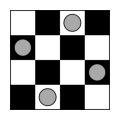

|  |
Peaceful Queens
Backtracking for Solutions to the Peaceful Queens Problem
|
The Peaceful Queens problem is the problem of placing \(n\) queens on an \(n \times n\) chessboard in such a way that no queen threatens any other, recalling that queens can attack along row, column, diagonals, and back-diagonals. The example below shows a solution to the \(8 \times 8\) Peaceful Queens problem.
This program uses a recursive backtracking algorithm to find solutions to the Peaceful Queens problem. It uses exhaustive search through permutations to avoid row and column threats, pruning using a pair of arrays to detect diagonal and back-diagonal threats. Each solution is stored as an array A such that the queen in column i is in row A[i]. Note that A therefore contains a permutation of the row indexes (see Section 3 for more details). Each solution is printed to the console and saved to a file in SVG (Scalable Vector Graphics) format. The number of solutions found is also reported to the console.
It would unwise to run this progam for \(n \geq 10\) because it will fill your disk with solutions unless you comment out the line ExportToSVG(A, n) in function process(). Even if you do so, it would unwise to run this program for \(n \geq 16\) unless you have the patience to wait for the result, because the run-time required will increase exponentially with \(n\) (your experience may vary depending on the computing power that you have at your disposal). Table 1 shows the board size \(n\) and the number of Peaceful Queens solutions \(Q(n)\) on an \(n \times n \) chessboard for \(4 \leq n \leq 18\).
| \(n\) | \(Q(n)\) |
|---|---|
| 4 | 2 |
| 5 | 10 |
| 6 | 4 |
| 7 | 40 |
| 8 | 92 |
| 9 | 352 |
| 10 | 724 |
| 11 | 2,680 |
| 12 | 14,200 |
| 13 | 73,712 |
| 14 | 365,596 |
| 15 | 2,279,184 |
| 16 | 14,772,512 |
| 17 | 95,815,104 |
| 18 | 666,090,624 |
A Visual Studio solution file backtrack.sln has been provided in the root folder. It has been tested with Visual Studio 2019 Community under Windows 10.
A make file has been placed in the root directory. Type make to create the executable file. It has been tested with g++ 9.4.0 on the Ubuntu 20.04.4 LTS subsystem under Windows 10.
As mentioned above, each Peaceful Queens solution is stored as an array A[n] such that the queen in column i is in row A[i], which means that A contains a permutation of the row indexes. For example, the \(8 \times 8\) solution shown in as shown in Fig. 1 would be stored as the array A[8] = {1, 4, 6, 0, 2, 7, 5, 3]. We can therefore begin with this somewhat naive recursive function for printing all permutations, which is initially called with permute(A, n, n).
void permute(size_t A[], size_t m, size_t n){ if(m == 0)print(A, n); else{ permute(A, m - 1, n); for(size_t i=0; i<m; i++){ std::swap(A[m], A[m - i - 1]); permute(A, m - 1, n); std::swap(A[m], A[m - i - 1]); } //for } //else } //permute
Note that we should avoid permutations with consecutive elements A[i+1] = A[i]+1 because they contain a diagonal threat. We can thus dispense with the first recursive call in the above code, resulting in the following.
void permute(size_t A[], size_t m, size_t n){ if(m == 0)print(A, n); else{ for(size_t i=0; i<m; i++){ std::swap(A[m], A[m - i - 1]); permute(A, m - 1, n); std::swap(A[m], A[m - i - 1]); } //for } //else } //permute
Finally, we need to eliminate any remaining diagonal and back-diagonal threats, hopefully in \(O(1)\) time without recourse to any kind of linear search. This is accomplished by using two Boolean arrays b[] and d[] in which b[i] is true if back-diagonal i is unoccupied and d[i] is true if diagonal i is unoccupied.
But how are back-diagonals and diagonals indexed? Note that if squares \((i,j)\) and \((k, \ell)\) are on the same back-diagonal, then \(i+j = k+\ell\), and if they are on the same diagonal, then \(i-j = k-\ell\). Therefore, we use two Boolean arrays b[2n+1] and d[2n+1] such that b[i+j] is true if the back-diagonal that square i, j is in is unoccupied, and d[i+j+n-1]is true if the diagonal that square i, j is in is unoccupied. All that remains is to set and unset the corresponding entries in b and d every time a swap is made in A, which you can see in function queen(size_t[], bool[], bool[], size_t, size_t, size_t&) in backtrack.cpp.
The Peaceful Queens solutions found by this program are saved in SVG (Scalable Vector Graphics) format, which can be viewed in any web browser. Fig. 1 shows an example. Notice that you can zoom in and out on the image in your browser without any pixelation. For more information on this format, see the Wikipedia article.